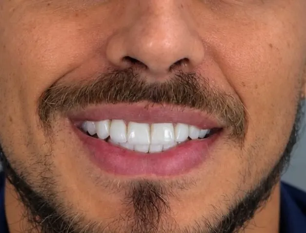
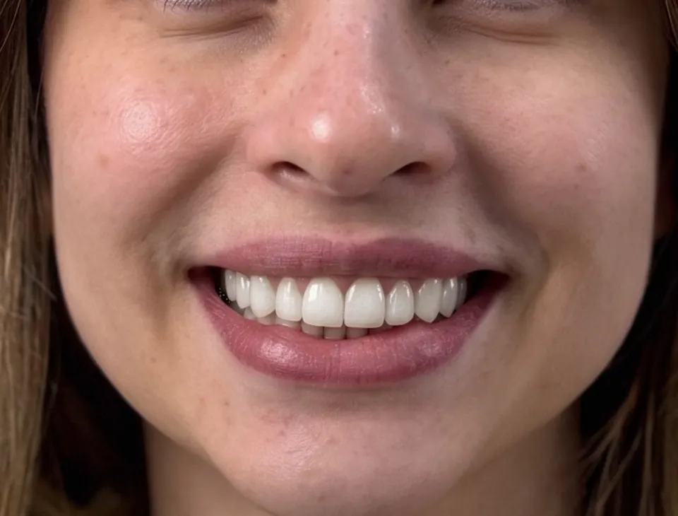
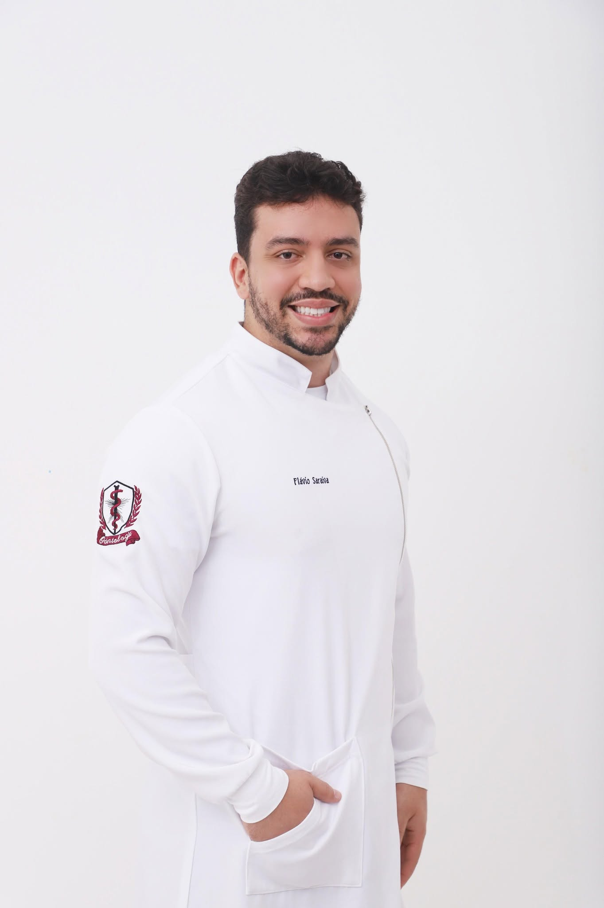
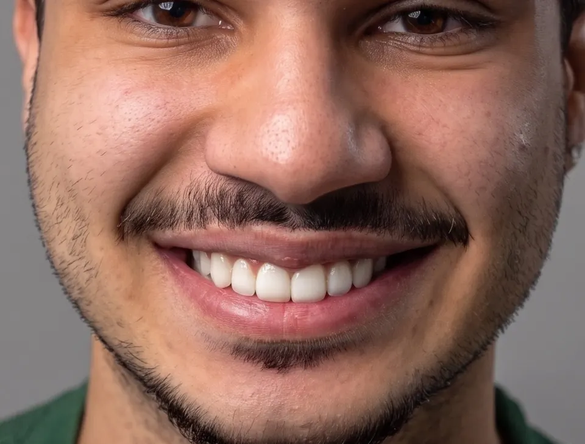
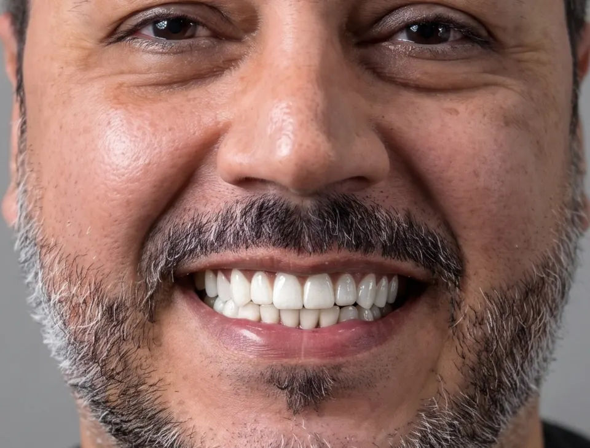
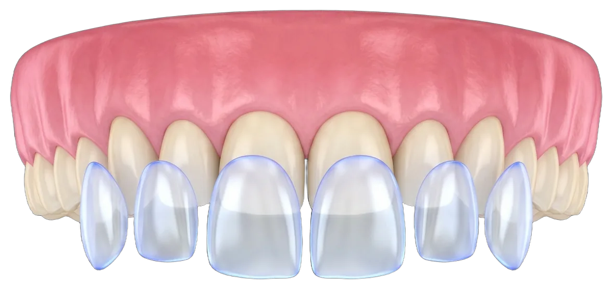
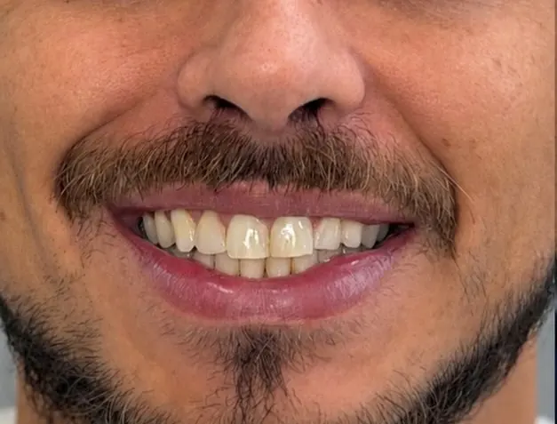
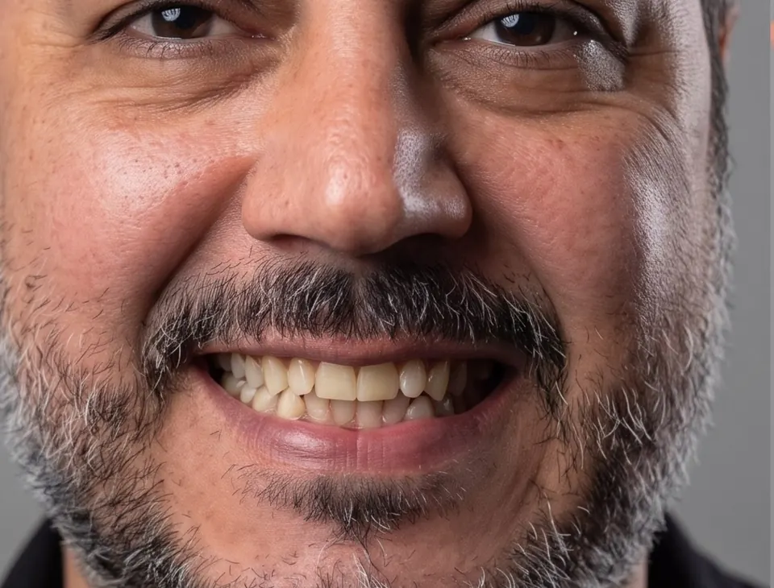
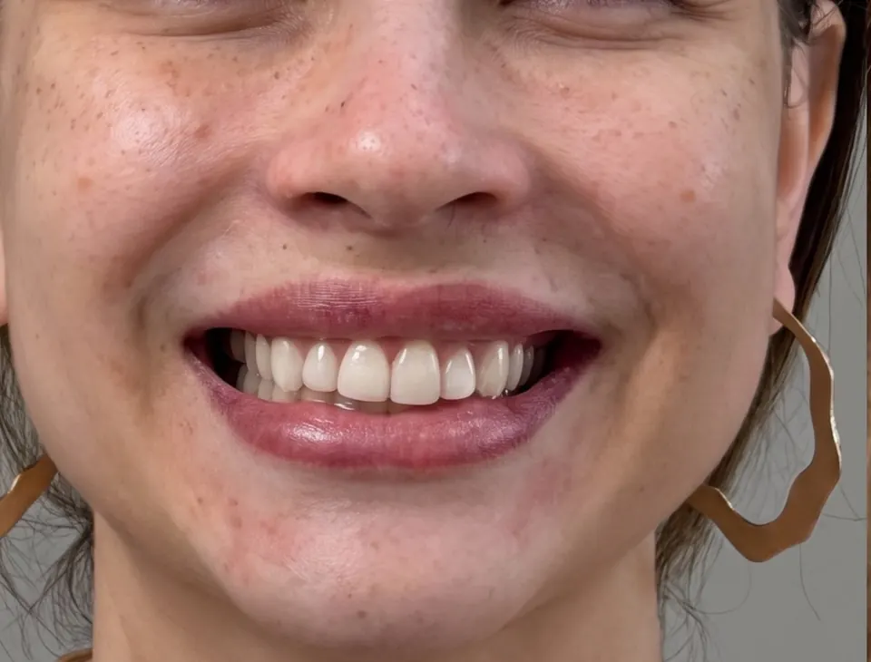

Transformação do Sorriso
Com quais queixas
Com quais queixas
os pacientes me procuram




Protocolo em Resina
Precisão estética em cada camada
Precisão estética em cada camada
da sua faceta
Facetas em Resina
Escultura dental artesanal em camadas ópticas. Corrige formato, volume e cor preservando a estrutura íntegra do dente saudável.
Saiba mais +Clareamento Prévio
Preparo seguro da base dental antes das facetas para alcançar tonalidades mais claras e luminosas com máxima naturalidade.
Saiba mais +
Design Gengival
Alinhamento delicado do contorno gengival (gengivoplastia) quando indicado, criando a moldura simétrica ideal para as novas lentes.
Saiba mais +Polimento e Longevidade
Protocolo de acabamento espelhado em múltiplas etapas que reproduz a textura do esmalte natural e garante alta durabilidade ao brilho.
Saiba mais +
Por que escolher facetas
em resina composta
Técnica aditiva, conservadora e segura que transforma formato, cor e proporção do sorriso preservando a estrutura saudável dos dentes.
Preservação do dente natural
Técnica aditiva e minimamente invasiva que, na grande maioria dos casos, não exige desgaste do esmalte saudável.
Naturalidade e estética óptica
Estratificação artesanal em camadas que reproduz fielmente a textura, a translucidez e a anatomia do dente real.
Correção de formato, cor e espaços
Solução definitiva para fechar diastemas, corrigir dentes curtos, bordas desgastadas ou manchas resistentes.
Troca de facetas antigas
Remoção cuidadosa e substituição de resinas manchadas ou opacas por novas lentes de alto padrão estético.
Etapas
Do diagnóstico ao novo
Do diagnóstico ao novo
sorriso, passo a passo
Você conhece cada etapa, os materiais utilizados e o resultado esperado antes de o procedimento começar.
Avaliação e escuta
Conversamos sobre o que incomoda no seu sorriso atual e qual o resultado de cor e anatomia você busca.
Análise facial e estética
Estudo detalhado das proporções do rosto, linha do sorriso e oclusão para desenhar a anatomia ideal.
Preparo da base
Clareamento prévio ou contorno gengival quando indicados, criando a base perfeita antes da resina.
Escultura das facetas
Aplicação artística e estratificada da resina composta sobre o dente, sem desgaste invasivo e sem dor.
Polimento espelhado
Acabamento refinado de alto brilho que imita o esmalte natural e acompanhamento para longevidade.
Sobre mim
Odontologia estética planejada
Odontologia estética planejada
com responsabilidade
Direciono cada tratamento de forma responsável e conservadora, preservando a estrutura dental e as características únicas de cada paciente. Meu foco nas facetas em resina composta é entregar um resultado natural, elegante e seguro, com textura e luminosidade que devolvam o orgulho de sorrir em cada foto.
Certificação e Especialização
Cirurgião-Dentista graduado pela Una de Bom Despacho com certificação especializada em Resinas Compostas e Reabilitação Estética.
Filosofia de Atendimento
Odontologia conservadora com técnica aditiva: valorização da saúde biológica do dente, sem desgastes desnecessários e com anestesia confortável.
Registro Profissional
CRO-MG 75116 · Flavio Saraiva Odontologia LTDA (CNPJ 61.149.160/0001-91)
Antes e depois · Facetas em resina
Resultados de pacientes
Resultados de pacientes
acompanhados na clínica
Antes

Depois
Facetas em resina composta
Harmonização completa de cor, textura e volume dental com acabamento natural e alinhamento do sorriso.
Antes

Depois
Reabilitação estética superior
Recuperação da luminosidade, correção de desgastes incisais e rejuvenescimento da expressão facial.
Antes

Depois
Estética natural e delicada
Refinamento de contorno, clareamento e simetria preservando a delicadeza e a identidade do sorriso.
Antes
Depois
Alinhamento e brilho em resina
Transformação da curva do sorriso e uniformização de cor com resinas compostas de alto polimento.
Histórias Reais
O que dizem os pacientes
O que dizem os pacientes
após a transformação
Reações autênticas gravadas diretamente no consultório após a finalização das facetas em resina.
"Ficou do jeito que eu imaginei! Mudou meu olhar, meu rosto, e não senti dor nenhuma."
"Tive uma experiência ruim antes e estava inseguro, mas o Dr. Flávio me passou total segurança."
"Fizemos em 3 etapas, sem desgaste nenhum no dente. Paciência e atendimento nota mil!"
Ler a transcrição dos relatos em vídeo
Ana Luiza — Facetas em resina e naturalidade
"Ficou do jeito que eu imaginava! Dr. Flávio finalizando o sorriso... Atingiu suas expectativas? 'Nossa, gostei demais, até mudou meu olhar, meu rosto!' Esperava que ficasse assim? 'Esperava já, presente de aniversário!' Com certeza. Não senti dor nenhuma, foi super tranquilo, maravilhoso! Agora acabou a vergonha de sorrir nas fotos, ficou do jeito que eu imaginava!"
Diego — Troca e reabilitação de facetas antigas
"Quem me acompanha sabe que sempre direciono o tratamento de forma conservadora e responsável. O Diego chegou com um resultado anterior insatisfatório: 'Tive uma experiência não muito agradável com outro profissional antes e fiquei inseguro em fazer novas facetas. Mas cheguei aqui com o Dr. Flávio, ele me passou total segurança, fiz e estou muito satisfeito. Ficou melhor do que eu esperava!'"
Fael (@faelzueira) — Lentes em resina sem desgaste
"Quero compartilhar um sonho que realizei. Sempre quis colocar lentes nos dentes, mas achava que não teria condição. Até que conheci o trabalho do Dr. Flávio Saraiva em Bom Despacho. Dividimos em 3 etapas: gengivoplastia, lentes superiores e lentes inferiores. Não tem aquele desgaste agressivo no dente que falam na internet; com resina é super tranquilo e o Dr. Flávio tem um atendimento nota mil!"
Dúvidas
Perguntas mais
Perguntas mais
frequentes
Ficou com alguma outra dúvida sobre facetas em resina? Chame diretamente nossa equipe pelo WhatsApp para conversar com o Dr. Flávio.
Não. A técnica do Dr. Flávio é estritamente aditiva e conservadora: a resina é aplicada e esculpida diretamente sobre o esmalte íntegro, sem desgastes invasivos na estrutura saudável do dente. O procedimento é confortável, seguro e realizado sob anestesia delicada quando necessário.
As facetas em resina composta são esculpidas artesanalmente pelo Dr. Flávio diretamente no consultório, geralmente em poucas sessões e sem a necessidade de desgastes irreversíveis no dente natural. Além disso, possuem manutenção simples e custos mais acessíveis, entregando altíssimo padrão de brilho e translucidez através das resinas ópticas modernas.
Sim! O Dr. Flávio possui certificação especializada em resinas compostas e trabalha com técnica de estratificação em múltiplas camadas. Isso reproduz com precisão a translucidez da borda incisal, os halos ópticos e a textura de um dente jovem natural, evitando totalmente a aparência artificial ou opaca de "chiclete".
Com certeza. Muitos pacientes chegam ao consultório insatisfeitos com facetas antigas que perderam o brilho, mancharam ou ficaram desproporcionais ao rosto. Realizamos a remoção criteriosa do material antigo preservando a estrutura dental e confeccionamos novas lentes com design harmônico e natural.
Após a consulta de avaliação e planejamento (e clareamento prévio, quando indicado), a escultura das facetas costuma ser finalizada em 1 a 3 sessões clínicas com resultado imediato. Com boa higiene bucal e visitas periódicas para manutenção do polimento espelhado, as facetas mantêm beleza e funcionalidade por muitos anos.
O consultório principal está localizado no coração de Bom Despacho - MG, na Avenida Vigário Nicolau, 223 - Centro (CEP 35630-072), em espaço moderno, climatizado e de fácil acesso. O Dr. Flávio também realiza atendimentos em Nova Serrana - MG.
O valor varia conforme o número de dentes, a complexidade do caso e a necessidade de etapas como clareamento prévio ou gengivoplastia. Por isso o orçamento é definido após a avaliação, com planejamento individual. Chame o Dr. Flávio pelo WhatsApp para agendar.
Quando o objetivo é um tom mais claro, o clareamento prévio é indicado para definir a cor-base antes da escultura da resina. A necessidade é definida na avaliação.
Sim. O fechamento de diastemas é uma das indicações das facetas e lentes em resina: a anatomia dos dentes vizinhos é esculpida para harmonizar o sorriso. A viabilidade é confirmada na avaliação.
Podem corrigir cor, formato e bordas desgastadas, reconstruindo a anatomia com resina. Manchas profundas e dentes curtos são avaliados caso a caso, às vezes com clareamento ou gengivoplastia.
"Lente de contato dental" é como muitos pacientes chamam as facetas ultrafinas. No consultório, o Dr. Flávio trabalha com lentes e facetas em resina composta, esculpidas diretamente no dente, em técnica aditiva e conservadora.
Com boa higiene e manutenção periódica do polimento, as facetas mantêm o brilho. Café, vinho, tabaco e hábitos como roer unhas podem comprometer cor e superfície, por isso o acompanhamento é recomendado.
Clínica em Bom Despacho
Estrutura preparada para
Estrutura preparada para
cada etapa do tratamento
Nosso consultório está localizado no coração de Bom Despacho, em um espaço de fácil acesso e conveniência, priorizando sempre a biossegurança e o conforto. O Dr. Flávio também atende em Nova Serrana - MG.
Consultório odontológico

Equipamentos e biossegurança

Fachada · Centro de Bom Despacho

Flavio Saraiva Odontologia
Av. Vigário Nicolau, 223 · Centro
Bom Despacho - MG · CEP 35630-072
Como chegar
Av. Vigário Nicolau, 223 · Bom Despacho/MG